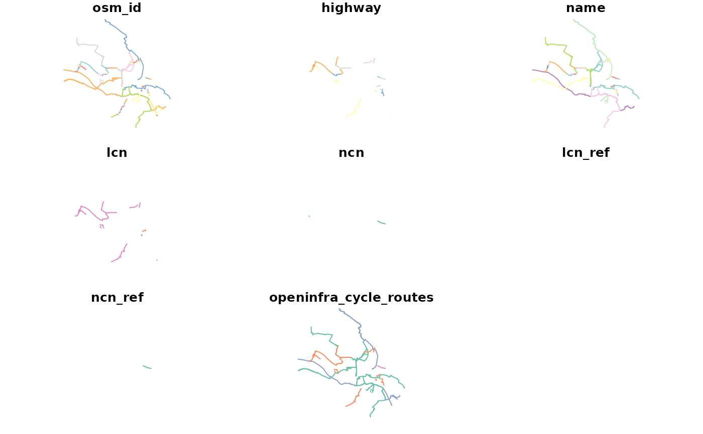

R/oi_cycle_routes.R
oi_cycle_routes.RdThis function parses OSM data at the ways (linestrings), and relations (colection of geometrical features) level to obtain local and national cycle network (lcn/ncn) routes.
oi_cycle_routes(osm_ways, osm_relations, ..., remove=FALSE)A sf object containing OpenStreetMap infrastructure data
on ways (linestrings), obtained using the
osmextract R package.
A sf object containing OpenStreetMap infrastructure
data on relations (collection of features), obtained using the
osmextract R package.
Through (Named) argument return_cols, one can specify columns
returned in the joined sf object containing ways & relation cycle routes.
return_cols should contain all columns to be returned in the combined
ways & relations sf object. If no return_cols is supplied, the sf
will be returned with the following default values: "osm_id", "highway",
"name", "lcn", "ncn", "lcn_ref", "ncn_ref", "openinfra_cycle_routes",
"geometry".
Note: columns to be returned MUST be present in both osm_ways and
osm_relations to perform rbind. For more information see ?rbind()
A boolean value, FALSE by default. If TRUE, removes
features from the combined sf object if values of
openinfra_cycle_routes are NA. (not part of a cycle route)
a single sf object is returned containing both local and national
cycle network routes from the ways and relations layer. Information on
cycle routes assessed can be found in the openinfra_cycle_routes column.
Note that the routes obtained through this function are for bicycle routes only. That is, features from relations must contain the route="bicycle" tag, as opposed to say, route="mtb", a tag for mountain bike trails. For more information see routes.
Note: the osm_ways & osm_relations must contain the following
tags: "lcn", "lcn_ref", "ncn", "ncn_ref", "type", "route", "network",
"cycle_network"
osm_ways = example_data
osm_relations = example_data_rels
# NB: Not specifying `return_cols` here - default will be used instead.
output = oi_cycle_routes(osm_ways, osm_relations, remove=TRUE)
#> No `return_cols` argument supplied, using default values:
#>
#> "osm_id", "highway", "name", "lcn", "ncn", "lcn_ref","ncn_ref", "openinfra_cycle_routes", "geometry"
#>
#> For more information see `?openinfra::oi_cycle_routes()`
#> osm relations: Mon Oct 31 19:49:10 2022
#> osm ways: Mon Oct 31 19:49:10 2022
#> rbinding: Mon Oct 31 19:49:10 2022
#> Removing NAs: Mon Oct 31 19:49:11 2022
#> Complete Mon Oct 31 19:49:11 2022
plot(output)
